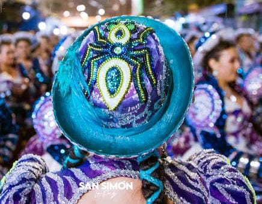
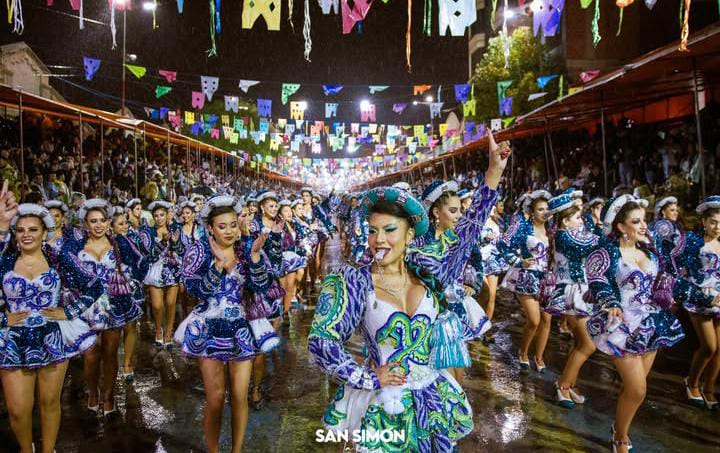

TROPA DE CHOLITA SS QUIEN ES SÓN
la tropa de cholita de San Simon de la paz hay que dar un examen para pertencer a ellas sabías que la tropa de cholitas de San Simón crearon la moda de ponerle un pluma al costado del sombrero a comparación de los sambos y la enf que usan cintas
la mujer usaba una blusa de mangas anchas, falda larga que en la actualidad se ha ido acortando hasta ser una minifalda, calzados y el característico sombrero tipo borsalino o también conocido en Bolivia como sombrero de cholita.
 IR al pricinpio